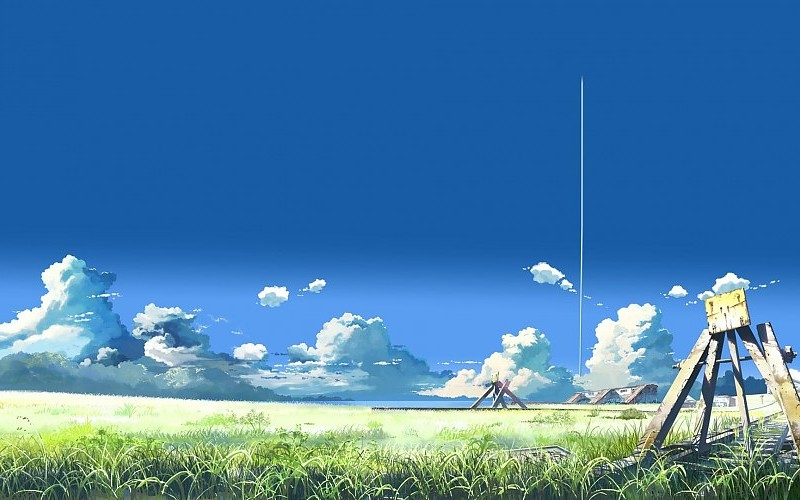

La Tour au-delà des nuages (雲のむこう、約束の場所, Kumo no mukō, yakusoku no basho, litt. « Au-delà des nuages, l'endroit promis ») est un film d'animation japonais de 91 minutes sorti le 20 novembre 2004, réalisé sur une idée propre par Makoto Shinkai aidé de Ushio Tazawa pour le character design, et produit par CoMix Wave Films. Avant que l'auteur ne soit diffusé en France, cette œuvre était aussi connue sous les noms Beyond the Clouds, The Promised Place et The Place Promised in Our Early Days.
Dans un Japon uchronique, une division de l'archipel s'est déroulée en 1945 : l'ile d'Hokkaido est occupée par l'Union, le reste par les États-Unis. La construction d'une tour démarre sur Hokkaido en 1974. Dans les années 1990, les travaux de la tour aboutissent. En 1996, trois adolescents sont fascinés par la tour : Hiroki Fujisawa et Takuya Shirakawa, deux garçons qui construisent un avion, et Sayuri Sawatari, une fille qui joue du violon. Ils se promettent de se rendre à la tour avec l'avion. Trois ans plus tard, Takuya travaille dans une université militaire de la NSA. Son équipe tente de créer un échange de matière avec un univers parallèle. Ils parviennent à des échanges de la taille d'un grain de sable. Du côté de l'Union, la tour est utilisée pour le même objectif, mais la zone échangée fait plusieurs kilomètres de diamètre. Sayuri Sawatari est atteinte de catalepsie : elle dort en permanence depuis trois ans dans un hôpital. Hiroki fait ses études à Tokyo, et reçoit avec trois ans de retard une lettre envoyée par Sayuri expliquant sa situation. Il revient alors dans sa ville natale avec l'idée de finir la construction de l'avion et d'emmener Sayuri près de la tour pour qu'elle se réveille. Aidé par Takuya, ils réalisent le vol alors que la guerre entre les deux Japons débute.